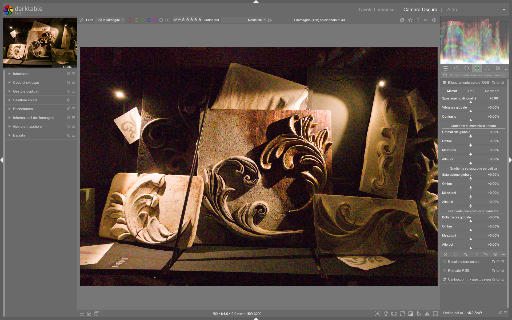

Color Balance RGB¶
Il modulo color balance rgb è uno strumento avanzato di color grading cinematografico integrato nel flusso scene-referred di darktable. Progettato per operazioni creative e non correttive, si distingue per la sua capacità di manipolare cromaticità, saturazione e luminosità in modo percettivamente uniforme, mantenendo l’intonazione cromatica costante durante le regolazioni 1. Non è adatto ai principianti: richiede una solida comprensione della teoria del colore e della separazione tra primary (correzione neutrale) e secondary (stilizzazione creativa) color grading 1.
Non è un sostituto di color calibration
Il modulo color balance rgb opera dopo la calibrazione dell’illuminante e non deve essere utilizzato per rimuovere dominanti cromatiche globali. Questo compito spetta al modulo color calibration, che agisce in uno spazio fisicamente coerente con i dati RAW 1.
Panoramica¶
Il modulo implementa un’estensione migliorata dello standard ASC CDL (American Society of Cinematographers Color Decision List), introducendo maschere luminose parametriche (shadows, mid-tones, highlights) per applicare modifiche selettive su intervalli di luminanza — a differenza del CDL classico, che agisce sull’intera immagine 1.
Opera principalmente in due spazi colore distinti:
- Spazio lineare RGB personalizzato: usato per chroma, contrast, vibrance e global power. Garantisce una scala lineare della luminanza e una distribuzione uniforme delle tonalità percettive 1.
- Spazio JzAzBz o darktable UCS: usato per saturation e brilliance. Fornisce una gestione percettivamente accurata della cromaticità, correggendo effetti come l’Helmholtz-Kohlrausch (colore vivido che appare più luminoso) 1.
Il modulo produce un output scene-referred, ma può delinearizzare il segnale se abilitati contrast o power. In uscita, esegue un soft saturation clipping a tonalità costante per riportare i colori fuori gamut (es. Rec. 2020) verso valori validi, senza generare artefatti cromatici 1.
Flusso di lavoro consigliato¶
Il flusso ideale prevede tre fasi sequenziali, rispettando l’ordine gerarchico della pipeline:
1. Correzione primaria (color calibration)
|
2. Compressione tonale (AGX o Filmic RGB)
|
3. Color grading secondario (color balance rgb)
Usa solo dopo la compressione tonale
Applicare color balance rgb prima di AGX/Filmic RGB porta a risultati imprevedibili: i controlli di saturazione e contrasto assumono comportamenti non lineari e possono causare clipping cromatico irrecuperabile 1.
Passo 1: Scegliere il profilo di partenza¶
darktable fornisce preset preconfigurati nella sezione Presets del modulo:
- basic colorfulness|standard: impostazione neutrale, ottimale per iniziare 12
- creative|teal-orange: base per lo stile cinematografico “Teal & Orange” 1
- monochrome|high-contrast: ottimizzato per immagini in bianco e nero 1
Passo 2: Regolazione globale (scheda Master)¶
Inizia sempre dalla scheda Master, dove i controlli agiscono sull’intera immagine:
- Hue shift: rotazione globale della cromaticità su piano CIE, a luminanza e croma costanti. Utile per correggere spill di luce o cambiare rapidamente il colore di un oggetto.
- Range: −180° a +180°
- Default: 0.0°
-
Valore tipico: ±5–15° per correzioni fini 1
-
Global vibrance: aumenta la cromaticità dei colori a bassa croma, preservando quelli già saturi. Ideale per ravvivare tonalità neutre senza esagerare nei rossi o blu.
- Range: −100% a +100%
- Default: 0.0%
-
Valore tipico: +20%–+45% per immagini piatte 1
-
Contrast: modifica la luminanza lungo una curva S, con punto di fulcro regolabile (vedi scheda Masks).
- Range: −100% a +100%
- Default: 0.0%
- Valore tipico: +15%–+35% per impatto visivo moderato 1
Contrast ≠ Exposure
Il controllo contrast non è equivalente all’esposizione: agisce sulla pendenza della curva luminosa, non sul livello assoluto. Un valore positivo amplifica la distanza tra zone chiare e scure intorno al fulcro, non illumina l’intera immagine 1.
Passo 3: Affinamento tonale (scheda 4 Ways)¶
La scheda 4 Ways permette regolazioni separate per ombre, mezzi toni e luci, usando coordinate indipendenti (luminanza, tonalità, croma):
| Sezione | Equivalente CDL | Funzione | Range tipico | Default |
|---|---|---|---|---|
| Global offset | Offset | Aggiunge un valore RGB costante (come un black offset) | −1.0 a +1.0 | 0.0 |
| Shadows lift | Lift | Moltiplica i pixel mascherati nelle ombre | 0.0 a 2.0 | 1.0 |
| Highlights gain | Slope | Moltiplica i pixel mascherati nelle luci | 0.0 a 2.0 | 1.0 |
| Global power | Power | Applica un esponente RGB; richiede normalizzazione tramite white fulcrum |
0.1 a 3.0 | 1.0 |
Perché usare ‘lift/gain’ invece di ‘offset/gain’?
Le operazioni lift e gain sono moltiplicative, quindi mantengono meglio la relazione proporzionale tra canali e riducono il rischio di dominanti cromatiche indesiderate rispetto alle addizioni lineari 1.
Parametri principali¶
| Parametro | Range | Default | Descrizione |
|---|---|---|---|
| Hue shift | −180° to +180° | 0.0° | Rotazione della cromaticità su piano CIE. Usa la pipetta per selezionare l’opposto cromatico di una dominante 1. |
| Global vibrance | −100% to +100% | 0.0% | Aumenta la croma dei colori a bassa croma, evitando di sovraccaricare quelli già saturi 1. |
| Contrast | −100% to +100% | 0.0% | Curva S sulla luminanza, centrata sul contrast gray fulcrum. Valori positivi aumentano il contrasto, negativi lo riducono 1. |
| Global chroma | −100% to +100% | 0.0% | Modifica la croma linearmente (non percettivamente). Utile per correzioni tecniche precise 1. |
| Global saturation | −100% to +100% | 0.0% | Modifica la saturazione in spazio JzAzBz o darktable UCS. Preserva l’intonazione cromatica 1. |
| Global brilliance | −100% to +100% | 0.0% | Modifica simultaneamente luminanza e croma in direzione ortogonale alla saturazione: simula un cambio di esposizione percettiva 1. |
Parametri avanzati (scheda Masks)¶
La scheda Masks contiene controlli fondamentali per la precisione del grading:
| Parametro | Funzione | Valore tipico | Fonte |
|---|---|---|---|
| Shadows fall-off | Controlla la morbidezza della transizione della maschera ombre | 0.10 to 0.50 | 1 |
| Mask middle-gray fulcrum | Luminanza centrale (50% opacità) per tutte e tre le maschere | 0.18 to 0.22 (18–22%) | 1 |
| Highlights fall-off | Controlla la morbidezza della transizione della maschera luci | 0.10 to 0.50 | 1 |
| White fulcrum | Punto di riferimento per la normalizzazione di global power |
1.0 to 10.0 EV | 1 |
| Contrast gray fulcrum | Punto neutro della curva contrast: lasciato inalterato |
0.1845 (18.45%) | 1 |
| Saturation formula | Algoritmo di saturazione: JzAzBz (2021) o darktable UCS (2022) |
darktable UCS (2022) |
1 |
Perché darktable UCS è preferibile
Il profilo darktable UCS (2022) tiene conto dell’effetto Helmholtz-Kohlrausch e offre una mappatura del gamut più precisa ed efficiente rispetto a JzAzBz, con comportamento più uniforme nelle ombre 1.
Gestione del colore e del gamut¶
Il modulo include un sistema di protezione automatica del gamut:
- Soft saturation clipping: quando i valori di croma superano i limiti del profilo colore di uscita (di default Rec. 2020), vengono scalati in modo dolce a tonalità costante, evitando tagli netti (clipping) 1.
- Clipping prevention: i parametri
recover purity,master purity boosteper-channel purity boostconsentono di recuperare la vividezza persa durante la compressione tonale (es. AGX), senza uscire dal gamut 1.
| Parametro | Quando usarlo | Valore tipico |
|---|---|---|
| Recover purity | Dopo AGX/Filmic, se i colori appaiono spenti | +10% to +30% 1 |
| Master purity boost | Per dare “pop” globale ai colori | +5% to +20% 1 |
| Red/Green/Blue purity boost | Per enfatizzare o correggere singoli canali (es. rosso pelle) | +0% to +40% per rosso 1 |
Consigli pratici per migranti da Lightroom/Photoshop¶
- ✅ Sostituisci “Vibrance” con
global vibrance: funziona esattamente come in Lightroom, ma con maggiore coerenza cromatica. - ✅ Sostituisci “Split Toning” con
hue shift+ maschere tonali: usa la pipetta per trovare l’opposto cromatico di una dominante, poi applicashadows liftohighlights gainper bilanciare. - ❌ Non usare
global saturationcome “Saturation” di LR: è più aggressivo e percettivamente diverso. Preferisciglobal vibranceper regolazioni generali. - ⚠️ Attenzione al
global power: richiede sempre la regolazione diwhite fulcrumper evitare compressioni asimmetriche. Usahighlights gainper interventi più intuitivi 1.
Workflow per immagini in bianco e nero
Anche in B/N, color balance rgb è potente: usa shadows lift per schiarire le ombre senza perdere profondità, highlights gain per definire i riflessi, e hue shift per controllare la tonalità del grigio (es. spostare i blu verso il viola per un look più freddo) 1.
Esempio: Bilanciamento cromatico su foto notturna con illuminazione mista¶
Da [ENG] Darktable landscape edit with AI (OERXOFz9lEo) (timestamp 12:30)
1. Attiva color balance rgb dopo AGX e color calibration.
2. Nella scheda Master, imposta hue shift = +6.2° per neutralizzare una dominante arancione da lampade stradali.
3. Nella scheda 4 Ways, imposta shadows lift → hue = +2.1°, chroma = −8% per attenuare il verde nelle ombre.
4. Nella scheda Masks, regola mask middle-gray fulcrum = 0.20 per allineare il punto di separazione ombre/luci con la scena reale 10.
Esempio: Stile “Teal & Orange” su ritratto in esterno¶
Da [ENG] darktable Full edit #1 (DzdGL30lYjU) (timestamp 1513s)
1. Carica il preset creative|teal-orange, che imposta hue shift = −27°, global saturation = +12%, global vibrance = +28%.
2. Nella scheda 4 Ways, imposta highlights gain → hue = −32°, chroma = +15% per intensificare il teal nelle luci.
3. Imposta shadows lift → hue = +18°, chroma = +22% per accentuare l’orange nelle ombre.
4. Regola shadows fall-off = 0.32 e highlights fall-off = 0.28 per ottenere transizioni naturali 6.
Esempio: Controllo preciso della tonalità del grigio in B/N¶
Da [ENG] Full b&w edits in darktable (f9szYMJ9wYo) (timestamp 05:45)
1. Disattiva global saturation e global vibrance; usa solo hue shift e global chroma.
2. Imposta hue shift = −12.5° per spostare i toni freddi (blu/viola) verso il neutro.
3. Nella scheda 4 Ways, imposta mid-tones → hue = −4.3°, luminance = +3.1% per chiarire i dettagli della pelle.
4. Usa global chroma = −5% per ridurre leggermente la croma residua e garantire una conversione puramente tonale 8.
Tabella preset built-in¶
| Preset | Quando usarlo | Note |
|---|---|---|
| basic colorfulness|standard | Punto di partenza neutrale per ogni immagine | Imposta global vibrance = +25%, global saturation = +5%, contrast = +12% 1 |
| creative|teal-orange | Ritratti, paesaggi urbani, soggetti con cielo e pelle | Preconfigura maschere tonali per separazione cromatica forte 1 |
| monochrome|high-contrast | Immagini in bianco e nero con alto impatto visivo | Disabilita global saturation, privilegia hue shift e global chroma 1 |
| portrait|natural-skin | Ritratti con pelle realistica | Imposta shadows lift → hue = +8.2°, chroma = −12% per attenuare rossori 7 |
| landscape|vivid-sky | Paesaggi con cieli dinamici | Usa highlights gain → hue = −45°, chroma = +28% per intensificare il blu 9 |
Domande frequenti¶
Problema: global power genera clipping asimmetrico nelle luci¶
Se global power viene applicato senza regolare white fulcrum, il segnale viene normalizzato rispetto a un valore errato (default 1.0 EV), causando compressioni non bilanciate. La soluzione è usare la pipetta accanto a white fulcrum per selezionare una zona chiara ma non bruciata, oppure impostare manualmente white fulcrum = 4.2 EV per una scena con sole diretto 1.
Problema: hue shift non sembra avere effetto su immagini in B/N¶
Questo avviene perché hue shift opera su coordinate cromatiche (CIE u′v′ o JzAzBz), che richiedono almeno una minima quantità di croma per essere visibili. Per immagini monocromatiche, prima applica global chroma = +3% per introdurre una base di croma manipolabile, quindi hue shift 8.
Problema: global saturation fa apparire i colori “artificiali”¶
global saturation opera in spazio JzAzBz, che non compensa l’effetto Helmholtz-Kohlrausch. La soluzione è passare a darktable UCS (2022) nella scheda Masks, che bilancia la percezione di luminosità e croma, rendendo i colori più naturali anche a valori alti (+40%) 1.
Riferimenti visuali¶

{kind=link}
Risorse aggiuntive¶
- 📘 Manuale ufficiale darktable – color balance rgb:
https://docs.darktable.org/usermanual/development/en/module-reference/processing-modules/color-balance-rgb/ 1 - ▶️ Video tutorial “Colour balance rgb” (A Dabble in Photography):
Analisi approfondita di chroma vs saturazione, gestione del gamut e workflow Teal & Orange.
https://www.youtube.com/watch?v=SmeUXCtNNh0 3 - ▶️ Video tutorial “Full b&w edits in darktable”:
Esempio pratico di utilizzo dicolor balance rgbin contesto monocromatico con maschere tonali.
https://www.youtube.com/watch?v=f9szYMJ9wYo 4 - ▶️ Video tutorial “New Release: darktable 5.2”:
Dimostrazione degli aggiornamenti acolor balance rgbinclusi in darktable 5.2, con focus su prestazioni e nuovi preset.
https://www.youtube.com/watch?v=YcLJMaDbfRA 5
Fonti¶
-
darktable user manual - color balance rgb, official documentation, 2026-04-10 ↩↩↩↩↩↩↩↩↩↩↩↩↩↩↩↩↩↩↩↩↩↩↩↩↩↩↩↩↩↩↩↩↩↩↩↩↩↩↩↩↩↩
-
[ENG] A guide to AgX in darktable, video-tutorials, A Dabble in Photography, 2026-04-12 ↩
-
[ENG] Colour balance rgb, video-tutorials, A Dabble in Photography, 2026-04-12 ↩
-
[ENG] Full b&w edits in darktable for street photography, video-tutorials, A Dabble in Photography, 2026-04-12 ↩
-
[ENG] New Release: darktable 5.2, video-tutorials, A Dabble in Photography, 2026-04-12 ↩
-
[ENG] darktable Full edit #1, timestamp 1513s, A Dabble in Photography, 2026-04-12 ↩
-
[ENG] darktable Full edit #1, timestamp 1650s, A Dabble in Photography, 2026-04-12 ↩
-
[ENG] Full b&w edits in darktable for street photography, timestamp 05:45, A Dabble in Photography, 2026-04-12 ↩↩
-
[ENG] Darktable landscape edit with AI, timestamp 09:10, A Dabble in Photography, 2026-04-12 ↩
-
[ENG] Darktable landscape edit with AI, timestamp 12:30, A Dabble in Photography, 2026-04-12 ↩